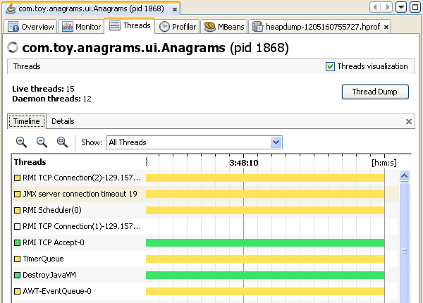
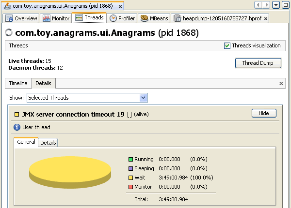
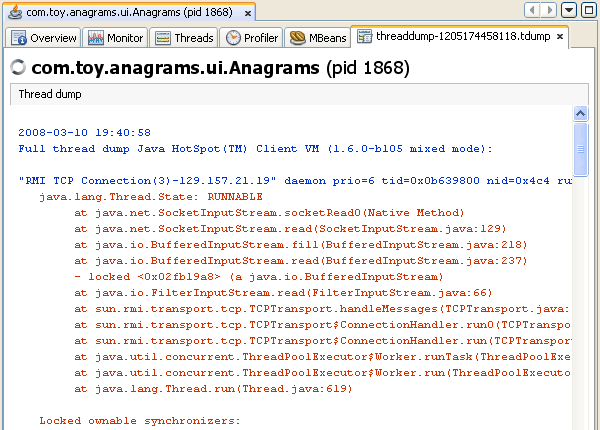

VisualVM presents data for local and remote applications in a tab specific for that application. When you open an application in VisualVM, each application opens in a new tab in the main window. You can have multiple application tabs open. Each application tab contains sub-tabs that display different types of information about the application.
The Threads tab displays real-time high-level data on thread activity and memory heap and classes loaded in the VM. By default the Threads tab displays a timeline of current thread activity. You can click a thread in the timeline to view details about that thread in the Details tab.
This tab displays a timeline with real-time thread states. You can zoom in/out on the current view or switch to the Scale to Fit mode. Using the combo box, you can select to display all threads, all live threads or all finished threads. Using (multi)selection, you can also specify a subset of threads to display. You can double-clicking on a thread timeline to open that thread in the Threads (Details) tab.
This Details tab displays more detailed information about individual threads. Using the combobox, you can select to display all threads, all live threads or all finished threads. You can also choose to display only the details of threads selected in the timeline view. For each thread, the name, classname and current status (alive/finished) are displayed. A short description of the thread is also provided.
Each thread displayed in the Details tab has the following tabs:
A timeline for each thread provides a quick overview of the thread's activity.
You can use VisualVM to take a thread dump while a local application is running.
